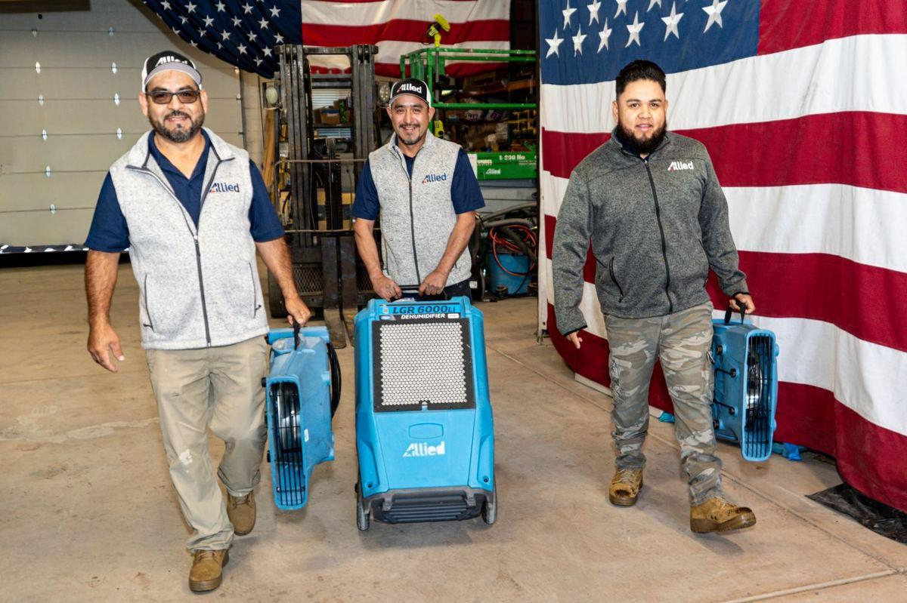
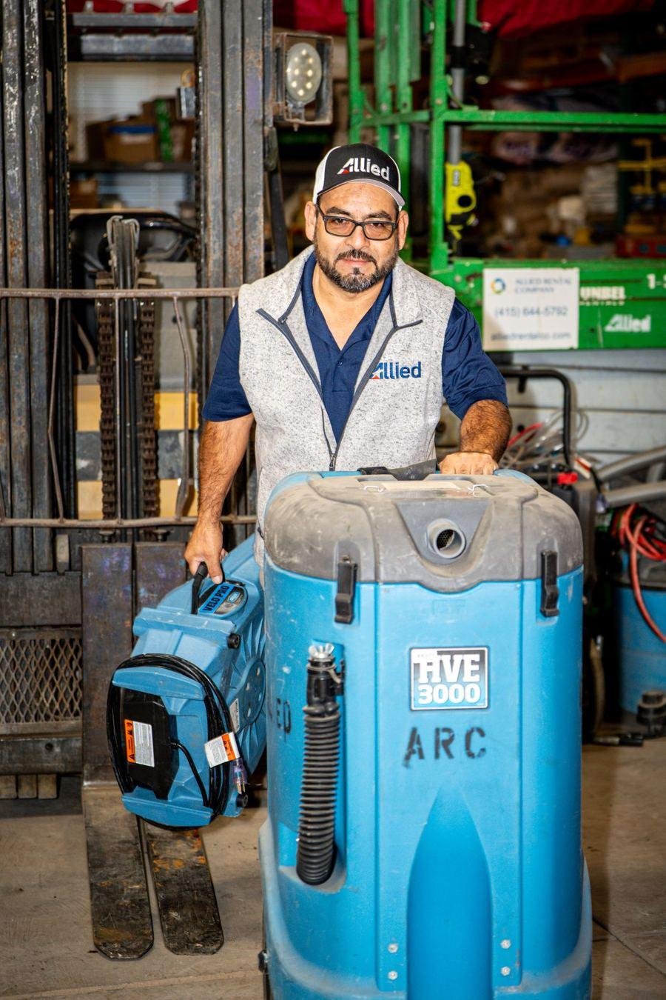

San Francisco Water Damage Experts
Allied Restoration Company has been San Francisco's most trusted water damage restoration company since 2010. Whether you've experienced a pipe burst in Pacific Heights, a slab leak in the Sunset, or a flooded basement in SoMa, our IICRC-certified team responds immediately — day or night.
Water damage compounds rapidly. Within 24 hours, what starts as wet drywall can become a mold colony. Within 48 hours, structural damage can begin. That's why we prioritize emergency response above everything else.


Our Water Damage Services Include
- Emergency water extraction
- Structural drying & monitoring
- Industrial dehumidification
- Hardwood floor drying
- Wall cavity dryout
- Moisture mapping
- Mold prevention treatment
- Insurance documentation
- Xactimate estimating
- Reconstruction coordination
Common Causes We Handle
Pipe Bursts & Plumbing Failures
San Francisco's aging housing stock (many homes built in the 1920s–1950s) is particularly prone to galvanized pipe failures. A burst pipe can discharge 100+ gallons per minute. We respond immediately to prevent secondary mold damage.
Appliance Overflow & Dishwasher/Washer Failures
Second-floor laundry rooms and dishwasher supply line failures are among the most common insurance claims in SF condos and flats. Water migrates through floors into lower units quickly. Early response prevents multi-unit damage.
Roof Leaks & Storm Damage
During San Francisco's winter rainy season, roof failures can introduce large amounts of water into attic spaces and wall cavities. We perform full moisture mapping to identify all affected areas before mold develops.
Slab Leaks & Foundation Moisture
Slab leaks under concrete floors can go undetected for weeks. Signs include warm spots on floors, unexplained increases in water bills, or cracks in flooring. We use thermal imaging and moisture meters to locate and document the damage.
Post-Fire Water Damage
After firefighters extinguish a blaze, thousands of gallons of water remain in the structure. If left unaddressed, this secondary water damage can complicate and extend the recovery process. We coordinate fire and water restoration simultaneously.
Why San Francisco Properties Need Professional Water Damage Services
Many property owners make the mistake of assuming minor flood remediation is a DIY job. The truth is that an established remediation company is necessary to assess the extent of the damage and ensure the damage doesn't happen again. Even small amounts of moisture, if not properly dried, lead to mold growth within 72 hours.
Allied Restoration uses industrial-grade equipment — high-velocity air movers, desiccant and refrigerant dehumidifiers, thermal cameras, and professional moisture meters — to ensure your property reaches the industry-standard dry condition before we close a job.